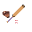

Another interest of mine is sports! I mainly enjoy Hockey and Baseball, as they are the two sports I played (and still play) throughout my youth. I watch sports through an analytical lense, and my main enjoyment is derived through analyzing strategies and performances, often with the help of statistics. Recently, I've also started to grow a passion for Soccer as it possesses that strategic and analytical aspect that I enjoy greatly.
